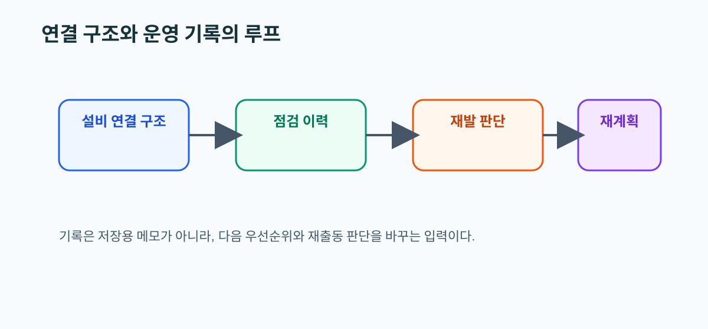

07. IEA DHC Connection Handbook 요약
왜 읽어야 하는가
HeatGrid는 단순한 경보기가 아니라, 연결 구조와 점검 이력을 활용해 다음 대응을 더 잘 짜는 Agent에 가깝다. 이 문서는 기록이 왜 재계획의 입력이 되는지를 이해하게 해 준다.
이 문서를 읽고 나면 할 수 있는 것
- 설비 연결 구조와 운영 기록을 한 묶음으로 설명할 수 있다.
- maintenance history가 왜 우선순위를 바꾸는지 설명할 수 있다.
- 재발 설비를 왜 따로 관리해야 하는지 이해할 수 있다.

핵심 개념
- 연결 구조는 안정 운영의 뼈대다.
- 기록은 단순 보관용이 아니라 다음 점검과 후속 계획의 입력이다.
- 책임 구분과 로그북 문화가 유지관리 품질을 높인다.
실무 예시
같은 밸브 이상이라도 최근 교체 이력과 반복 발생 이력이 있다면 출동 우선순위가 높아질 수 있다. 기록이 있어야 같은 고장을 다르게 판단할 수 있다.
PreDist 연결 예시
PreDist의 maintenance 이벤트는 단순 라벨이 아니라 “과거에 실제 개입이 있었던 설비”를 알려 주는 운영 기록으로 읽어야 한다.
HeatGrid 적용 포인트
- 이력 기반 우선순위 조정이 필요하다.
- 재발 설비는 재계획 루프에서 가중치를 높일 수 있다.
- 설명 가능한 작업지시서에는 과거 이력 요약이 붙는 편이 좋다.
초심자 체크포인트
- 운영 기록이 왜 예측 성능만큼 중요한지 설명할 수 있는가
- maintenance 이벤트를 작업 이력으로 해석하고 있는가
- HeatGrid가 왜 기록 구조를 가져야 하는지 이해했는가